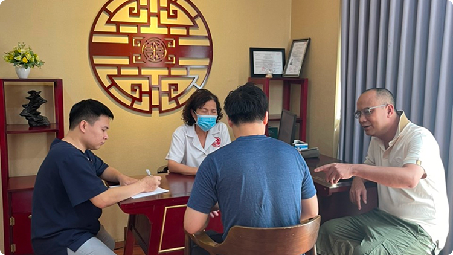

Huyệt Thiếu Trạch
Có khi nào bà con ngủ dậy mà thấy người mỏi rã rời, ban đêm trằn trọc mãi không yên, tiểu đêm tới 2-3 lần, lưng thì mỏi, gối thì rã rời? Nếu có – đừng đổ lỗi cho tuổi già hay thời tiết nữa. Tôi nói thật, gốc bệnh nằm ở Thận suy, khí hư mà bà con không hề hay biết.
THẬN – “GỐC RỄ TINH HOA”, NƠI KHỞI NGUỒN CỦA SỰ SỐNG THEO Y HỌC CỔ TRUYỀN
Theo y lý cổ truyền, Thận là tạng “Tàng tinh chi phủ” – nơi tàng trữ tinh hoa tiên thiên cha mẹ truyền lại, chủ về sinh trưởng, phát dục, sinh sản, đồng thời còn ảnh hưởng tới não tủy, xương cốt, tai, tóc, răng, tiểu tiện và chí khí con người.
Khi Thận suy yếu, không chỉ đời sống tình dục ảnh hưởng, mà cả thân – tâm – trí đều mệt mỏi:
- Lưng đau, gối mỏi.
- Tiểu đêm nhiều lần.
- Chóng mặt, ù tai, rụng tóc.
- Tinh thần bạc nhược, kém trí nhớ.
- Ngủ không ngon, tay chân lạnh ngắt.
Cái Thận, bà con ạ, không phải cứ yếu là bổ – mà phải biết DƯỠNG, mà đã dưỡng thì không thể gấp, không thể đốt cháy giai đoạn.
DƯỠNG THẬN KHÔNG CHỈ LÀ UỐNG THUỐC – MÀ LÀ MỘT CÁCH SỐNG THEO ĐẠO DƯỠNG SINH
Giữ ấm – giữ mệnh môn, bảo toàn nguyên khí
Thận chủ Hỏa, ưa ấm – sợ lạnh. Lạnh làm tổn thương Dương khí, khiến Thận yếu thêm, khí huyết đình trệ. Lão khuyên bà con nên:
- Giữ ấm vùng thắt lưng, gan bàn chân, rốn.
- Ngâm chân mỗi tối bằng nước ấm có muối hoặc gừng – khai thông kinh lạc, điều hòa khí huyết về Thận.
- Tránh uống nước đá, nằm sàn lạnh, dầm mưa, mặc phong phanh khi trời trở gió.
Ăn uống đúng cách – dưỡng Tỳ Vị, bổ Thận khí
Tỳ Vị sinh hóa nguồn khí huyết, nếu ăn uống sai cách, Tỳ suy thì Thận cũng hao.
- Ăn thanh đạm, đúng giờ, tránh ăn khuya.
- Hạn chế muối, đồ lạnh, chiên xào, rượu bia – những thứ khiến Thận hao mòn.
- Dùng nhiều thực phẩm màu đen theo Ngũ hành – tượng Thủy, bổ Thận như đậu đen, mè đen, củ mài, hà thủ ô, hạt óc chó…
Vận động đúng mực – “Dưỡng sinh chi đạo”
Thận chủ về xương, nhưng lại là tạng “hiềm lao” – không chịu được lao lực. Bà con không nên nằm ì, nhưng cũng tránh làm quá sức.
- Sáng sớm đi bộ nhẹ nhàng, hít thở sâu.
- Mỗi ngày xoa vùng Mệnh Môn (sát thắt lưng), bấm huyệt Dũng Tuyền (chính giữa gan bàn chân) – giúp kích hoạt Thận khí.
- Gõ răng, nuốt nước bọt – giúp kích thích tủy não, dưỡng Thận tự nhiên.
- Trước khi ngủ xoa bụng, vỗ nhẹ vùng thắt lưng – giảm tiểu đêm, ngủ ngon.
Giữ tinh thần yên ổn – nuôi dưỡng Thận khí
Thận chủ “Chí” – tức là ý chí, nghị lực. Người hay lo nghĩ, sợ sệt, dễ sinh Thận hư. Muốn Thận khỏe, tâm phải yên.
- Bà con tập sống chậm lại, thiền tĩnh 10–15 phút mỗi ngày.
- Tránh nóng giận, oán trách, ganh đua – những thứ làm tán khí, hao tinh.
- Mỗi ngày cười nhiều hơn, lo ít đi – đó cũng là một cách dưỡng Thận quý giá.
Tôi dặn bà con đôi điều: Dưỡng Thận là chuyện sống lâu, sống khỏe, sống có chất lượng. Đừng đợi đến khi tóc rụng, trí kém, chân run mới lo “bổ” – lúc đó là đã muộn.
Thận khỏe thì gốc khỏe. Mà gốc có khỏe, thì cả cây mới xanh, mới trổ hoa kết trái.
Tôi nói rồi, ai giữ được Thận như giữ vàng trong két – người đó có thể sống thọ, sống vui, sống trọn đạo làm người.